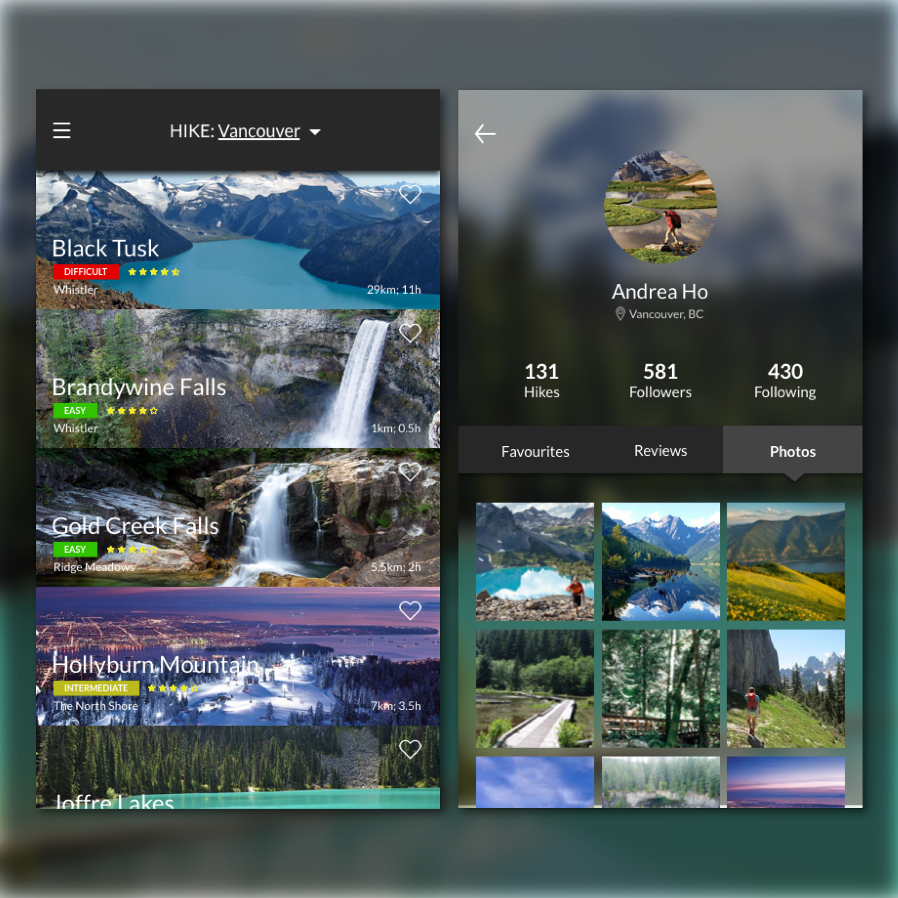

Day 70 - Be One With Nature
So glad to be back creating an app everyday. I almost forgot how much time I usually take to think of a design that would be suitable for the user who's experienced in the field.
Again, I found it hard to keep consistency throughout the screens when many pictures take up the space. As for the homepage, I've definitely designed something similar a couple weeks ago (the events app). Creating the rectangular boxes that stretch from one side to the other, is fine, but creating that consistency throughout the app is not my forte. For some reason, I really don't like the top banner on the homepage. I believe it's the text, but something tells me it isn't. I like how I created an arrow and underlined the location, which allows the user to change their preferred location. One thing I really wanted to add, but didn't was a filter. This could include popularity, ratings, difficulty level, etc. I was going to place it under the top banner, but I just couldn't think of a design for it.
As for the home page, this was similar to the travel app. I wanted to create something similar to Instagram but switching it to what the user wants to know: Hikes. This includes the user's favourite hikes, their reviews on specific hikes, and the photos they have taken on their travels. Another thing I wanted to add that Instagram actually removed, was the map. I wanted to create a map that shows the number of hikes that user have conquered in the area.
I can say that this isn't one of my favourite designs. It really shows what I need to work on.